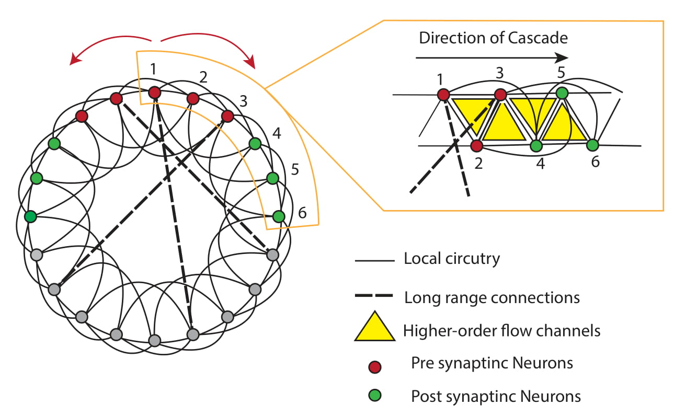
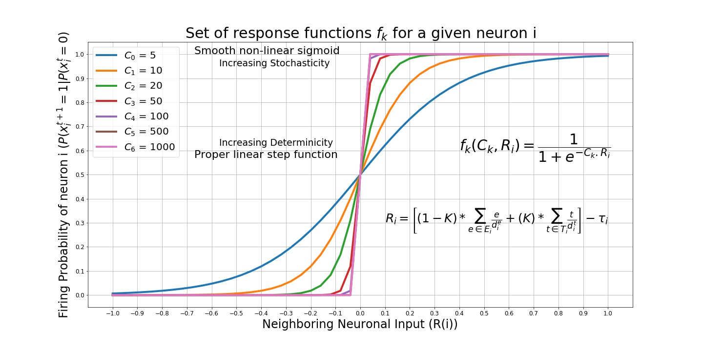

Introduction¶
Communication property of the brain often comes into surface as in the form of synchronization, self-organization and stochastic collective dynamics. Indeed, in the most homogeneosly distributed inch of the brain, networks of cortical neurons receive, process and transfer large number of synaptic responses with great temporal precision to maintain functional cognitive activity. So, this ac
Integration and propagation of such information occurs via cascading activity of groups of neurons arising from the interactions between recent activity history, non-linear neuronal properties and network topology.
In this project, we develop theoretical framework for the interplay between the dynamics and network topology manifesting through higher-order connections embedded in a manifold structure for neuronal activity.
Neuronal Cascades is the python module that we run our experiments. In this contagion model, we want to investigate the dynamics of a simplicial contagion starting from a seed cluster and spreading across the underlying network according to a stochastic threshold model. The model and hence the package is as general as possible in a way that one can play with the parameters to obtain different network topologies and contagion models.
Geometric and Noisy Geometric Networks¶
A substantial fraction of the synaptic input to a cortical neuron comes from nearby neurons within local circuits, while the remaining synapses carry signals from more distant locations. In the light of this observation, we use geometric networks as a proxy to mimic network topology of cortical brain regions.
A geometric network is a set of nodes and edges where the nodes connected to their ‘close’ neighbors in a euclidean distance manner.
Noisy geometric networks are obtained by adding ‘noise’ or edges that connects ‘distant’ nodes of the geometric network. These network topology manipulations are shown to demonstrate various contagion spread phenomenans such as wavefront propagation(WFP) or appearance of new clusters(ANC) in these networks.
{kind=link}
Neuronal subtypes¶
Intracellular recordings show that cortical neurons display beyond pairwise dynamics and are subjected to an intense synaptic bombardment working in a high-conductance state.
In the package, neuron objects can have individual activation thresholds as well as memory and refractory periods as a function of discrete time steps. This generalization enables heterogenity in the experiments as well as complexity of the non-trivial interactions.
Simplicial Contagion Model¶
Processing such frequent chatter necessitates a neuronal activation rule that is prone to intercellular noise to keep the neuronal communication on a thin line between dynamic states.
We are inspired by a neuoronal contagion model to asses this phenomena. The core function that we run our experiments decides if a given neuron is going to fire or not by a sigmoid function \(f(R_{i},C) = \frac{1}{1+\exp^{-C.R_{i}}}\) where \(R_{i}\), the neighboring neuronal input, is a function of current network history defined by \(R_{i} = \left[(1-K)*\sum_{e \in E_{i}} \frac{e}{d_{i}^{e}} + (K)*\sum_{t \in T_{i}}\frac{t}{d_{i}^{t}}\right] - \tau_{i}\) where \(E_{i}\) is the set of active edge neighbors, \(T_{i}\) is the set of active triangle neighbors of node \(i\), \(d_{i}^{e}\) and \(d_{i}^{t}\) are edge and triangle degrees of node \(i\) respectively. The constant \(K\) is used to strike a balance between traditional contagion maps and higher order, or simplicial, contagion maps.
{kind=link}
The main class we use geometric_network comes with several methods that we can manipulate the nature of the contagion very easily. For example, one can run either a stochastic or deterministic model by varying the parameter \(C\). Moreover, \(K=0\) recovers an edge contagion whereas \(K=1\) recovers a pure triangle contagion.
{kind=link}